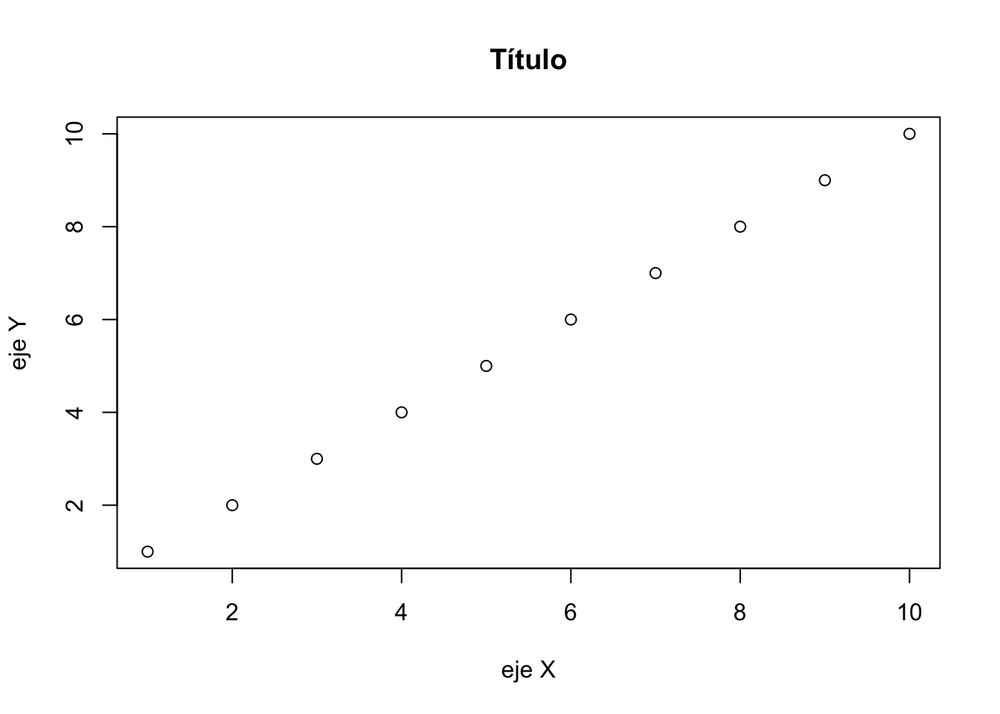
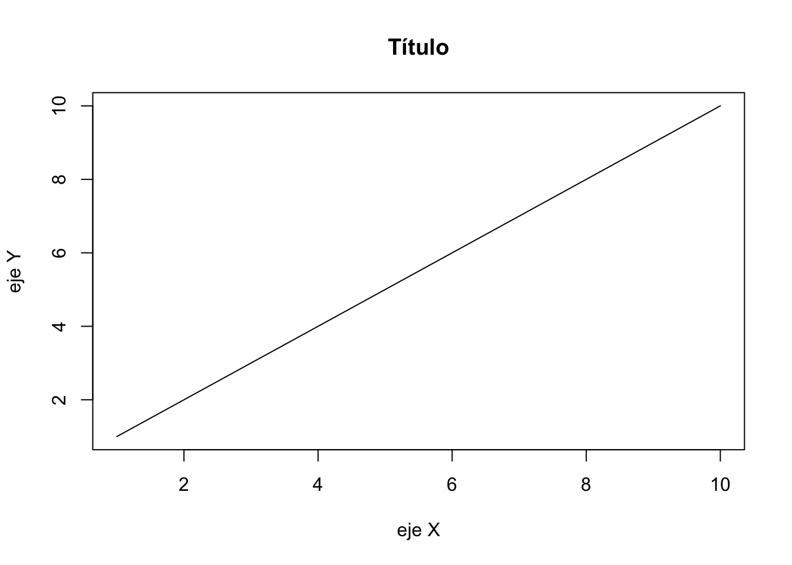
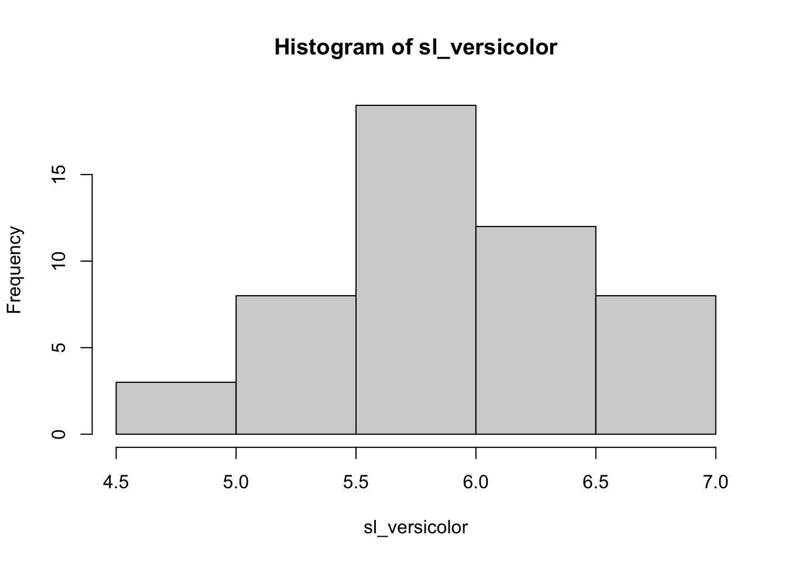
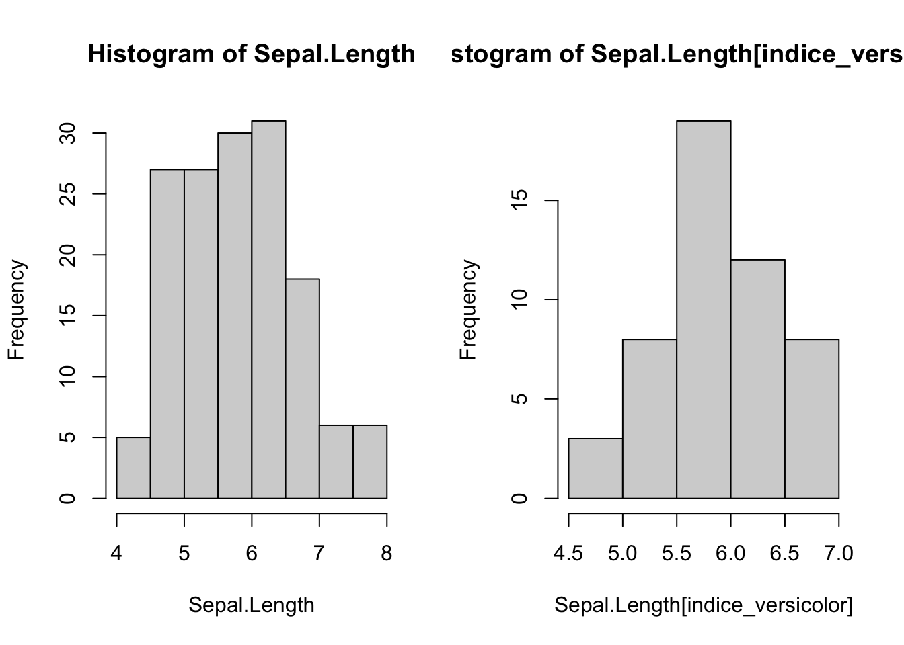
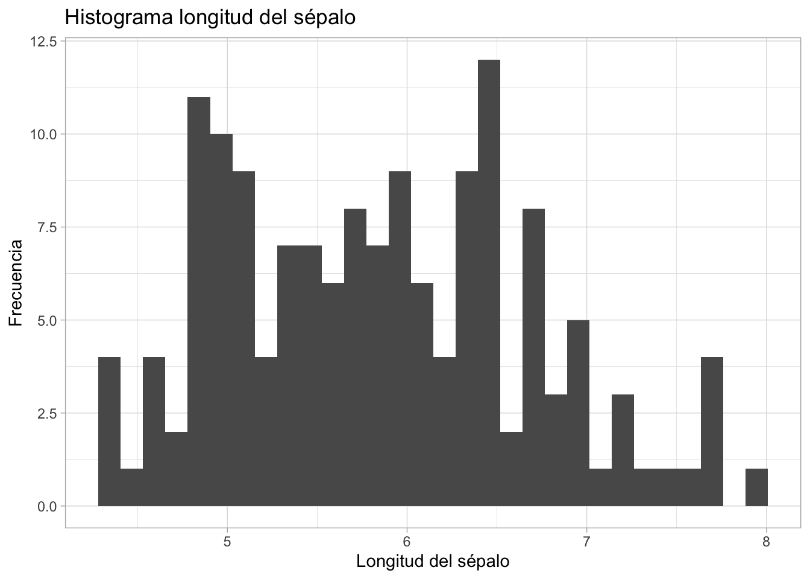
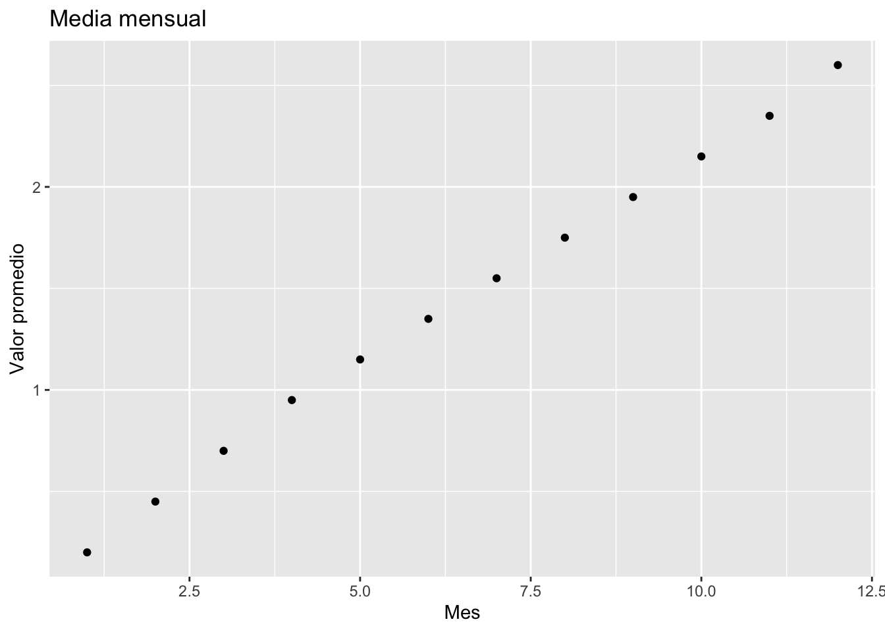

RStudio es un entorno de desarrollo integrado (IDE) para R y Python.
¿Qué es R?
R es un lenguaje de programación principalmente orientado al análisis estadístico y visualización de información cuantitativa y cualitativa y publicado como software libre.
To cite R in publications use:
R Core Team (2024). _R: A Language and Environment for Statistical
Computing_. R Foundation for Statistical Computing, Vienna, Austria.
<https://www.R-project.org/>.
A BibTeX entry for LaTeX users is
@Manual{,
title = {R: A Language and Environment for Statistical Computing},
author = {{R Core Team}},
organization = {R Foundation for Statistical Computing},
address = {Vienna, Austria},
year = {2024},
url = {https://www.R-project.org/},
}
We have invested a lot of time and effort in creating R, please cite it
when using it for data analysis. See also 'citation("pkgname")' for
citing R packages.
install.packages('ggplot2')# Instala el paquete 'ggplot2'library(ggplot2)# Carga el paquete 'ggplot2' para usar sus funcioneslibrary(help=ggplot2)# Muestra la ayuda disponible para el paquete 'ggplot2'browseVignettes()
Hay conjuntos de librerías según su temática llamadas Task Views
a<-NULL# Crea un vector vacíoa<-1:10# Crea un vector con valores del 1 al 10c<-seq(1, 10, by =0.5)# Crea un vector secuencial con incrementos de 0.5d<-c(0, 1, 1, 2, 3)# Crea un vector con valores específicose<-c('b1', 'b2', 'b3')# Crea un vector de cadenas de textof<-rep(5, 6)# Crea un vector repitiendo el número 5 seis vecesd[1]# Obtiene el primer elemento del vector 'd'
[1] 0
d[-1]# Excluye el primer elemento del vector 'd'
[1] 1 1 2 3
Matrices
mat<-matrix(1:12, 3, 4)# Crea una matriz con valores del 1 al 12, dispuestos en 3 filas y 4 columnasmat
df_mat<-as.data.frame(mat)## Convierte la matriz en un 'data.frame'
names(df_mat)# Muestra los nombres de las columnas
[1] "V1" "V2" "V3"
df_mat[2, 1]# Selecciona un elemento específico (fila 2, columna 1)
[1] 2
df_mat$V1# Selecciona una columna por su nombre
[1] 1 2 3 4 5 6 7 8 9 10
Gestión del espacio de trabajo
data(cars)# Carga un conjunto de datos de ejemplols()# Lista los objetos en el entorno actual (en RStudio no hace falta)rm(a)# Borra el objeto 'a'rm(list =ls())# Borra todos los objetos del entorno
Importar y manejar mis datos
data(iris)# Carga el conjunto de datos 'iris'head(iris)# Muestra las primeras filas del conjunto de datos
table(Species)# Crea una tabla de frecuencia por especie
Species
setosa versicolor virginica
50 50 50
summary(iris)# Resumen estadístico del conjunto 'iris'
Sepal.Length Sepal.Width Petal.Length Petal.Width
Min. :4.300 Min. :2.000 Min. :1.000 Min. :0.100
1st Qu.:5.100 1st Qu.:2.800 1st Qu.:1.600 1st Qu.:0.300
Median :5.800 Median :3.000 Median :4.350 Median :1.300
Mean :5.843 Mean :3.057 Mean :3.758 Mean :1.199
3rd Qu.:6.400 3rd Qu.:3.300 3rd Qu.:5.100 3rd Qu.:1.800
Max. :7.900 Max. :4.400 Max. :6.900 Max. :2.500
Species
setosa :50
versicolor:50
virginica :50
summary(cars)# Resumen estadístico del conjunto 'cars'
speed dist
Min. : 4.0 Min. : 2.00
1st Qu.:12.0 1st Qu.: 26.00
Median :15.0 Median : 36.00
Mean :15.4 Mean : 42.98
3rd Qu.:19.0 3rd Qu.: 56.00
Max. :25.0 Max. :120.00
sd(iris$Sepal.Length)# Desviación estándar de una variable
[1] 0.8280661
Exportar datos
Exportar un ‘data.frame’ como archivo CSV (valores separados por ‘comas’).
write.table(df_mat, # data.frame'df_mat.csv', # nombre del archivo de salida sep=';', # Separador de columnas dec=',', # Separador decimal col.names=TRUE, # Mantener nombres de las columnas row.names=FALSE)# No guardar nombres de las filas
Funciones
nombre_función<-function(argumentos){expresión}
di_hola_mundo<-function(){print('¡Hola Mundo!')# Imprime un mensaje en la consola}di_hola_mundo()# Llama a la función
[1] "¡Hola Mundo!"
a_euros<-function(pesetas){pesetas/166.386# Convierte pesetas a euros}a_euros(1000)# Convierte 1000 pesetas a euros
[1] 6.010121
a_pesetas<-function(euros){euros*166.386# Convierte euros a pesetas}a_pesetas(6)# Convierte 6 euros a pesetas
[1] 998.316
¿Cómo se haría la función ‘Área del triángulo’?
area_triangulo<-function(b=3, h=5){# valores por defectob*h/2# Calcula el área de un triángulo}area_triangulo()# Usa los valores por defecto
[1] 7.5
area_triangulo(b =4)# Especifica un valor diferente para la base
[1] 10
Gráficos
# Crea un gráfico con un título y etiquetas de ejesplot( x =1:10, y =1:10, xlab ='eje X', ylab ='eje Y', main ='Título')

# Gráfico con líneasplot( x =1:10, y =1:10, type ='l', xlab ='eje X', ylab ='eje Y', main ='Título')

# Gráfico con puntos y líneasplot( x =1:10, y =1:10, type ='o', xlab ='eje X', ylab ='eje Y', main ='Título')
Leyendas (gráficos básicos)
# Crea un gráfico de dispersión coloreado por especieplot(Sepal.Length,Petal.Length, col =as.factor(Species), xlab ='Long. Sépalo', ylab ='Long. Pétalo')# Agrega una leyenda al gráficolegend(7, # Posición en el eje X3, # Posición en el eje Y col =c(1:3), pch =1, # Símbolo legend =unique(Species))# Valores únicos de la variable Species
# Opción Aindice_versicolor<-Species=='versicolor'# Índice lógico para filtrar por especiehist(Sepal.Length[indice_versicolor])# Histograma de longitudes de sépalo para 'versicolor'
# Opción Bsl_versicolor<-subset(Sepal.Length, Species=='versicolor')# Otra forma de filtrarhist(sl_versicolor)# Histograma del subconjunto filtrado

Exportación de gráficos (agrupados)
#jpeg('histogramas.jpg')par(mfrow =c(1, 2))# Divide la ventana gráfica en una cuadrícula de 1x2hist(Sepal.Length)# Histograma de todas las longitudes de sépalohist(Sepal.Length[indice_versicolor])# Histograma de longitudes de sépalo para 'versicolor'

#dev.off() # Cierra el dispositivo gráfico (= guarda el fichero)
Histogramas (ggplot2)
ggplot(data =iris,aes(x =Sepal.Length))+geom_histogram()+labs( x ="Longitud del sépalo", y ="Frecuencia", title ="Histograma longitud del sépalo")+theme_light()
`stat_bin()` using `bins = 30`. Pick better value with `binwidth`.

# ggsave('histograma.png')
Diagramas de cajas (boxplots)
boxplot(Sepal.Length~Species)# Diagrama de cajas de longitudes de sépalo por especie
# boxplot usando ggplot2ggplot(data =iris,aes(x =Species, y =Sepal.Length, fill =Species))+geom_boxplot()+labs( x ="Especies", y ="Longitud del sépalo", title ="Gráfico de cajas y bigotes", subtitle ="Longitud del sépalo por especies")
bar1_data<-read.table('data/bar1_data.csv', sep =',', # El separador de columnas es la coma header =T)# La primera fila es el encabezadostr(bar1_data)# tipos de datos de las columnas del data.frame
'data.frame': 8 obs. of 3 variables:
$ Site : chr "S1" "S2" "S3" "S4" ...
$ year : int 2000 2000 2000 2000 2000 2000 2000 2000
$ value: num 0.755 0.43 0.977 0.959 1.414 ...
barplot(bar1_data$value, names.arg =factor(bar1_data$Site))# Crea un gráfico de barras
library(reshape2)# Carga la librería reshapedata<-read.table('data/data.csv', sep ='\t', header =T)# Lee un archivo de datoshead(data)# Muestra las primeras filas del conjunto de datos
site var1 var2
1 a 0.7549967 0.4457979
2 b -0.4297789 -0.5818249
3 c 0.9768700 0.1715152
4 d 0.9594651 -0.7068345
5 e 1.4142136 1.0907563
6 f 0.3863983 0.3364102
data_ggplot2<-melt(data, id =c('site'))data_ggplot2# Muestra los datos transformados
site variable value
1 a var1 0.7549967
2 b var1 -0.4297789
3 c var1 0.9768700
4 d var1 0.9594651
5 e var1 1.4142136
6 f var1 0.3863983
7 g var1 0.3980741
8 a var2 0.4457979
9 b var2 -0.5818249
10 c var2 0.1715152
11 d var2 -0.7068345
12 e var2 1.0907563
13 f var2 0.3364102
14 g var2 0.4796152
data_orginal<-dcast(data_ggplot2, site~variable)# convertir niveles de una variable en columnashead(data_orginal)
site var1 var2
1 a 0.7549967 0.4457979
2 b -0.4297789 -0.5818249
3 c 0.9768700 0.1715152
4 d 0.9594651 -0.7068345
5 e 1.4142136 1.0907563
6 f 0.3863983 0.3364102
help(dcast)# función de agregación (similar a tabla pivotante de Excel)
Test de tendencias de series temporales (Mann-Kendall)
── Attaching core tidyverse packages ──────────────────────── tidyverse 2.0.0 ──
✔ dplyr 1.1.4 ✔ stringr 1.5.1
✔ forcats 1.0.0 ✔ tibble 3.2.1
✔ purrr 1.0.4 ✔ tidyr 1.3.1
✔ readr 2.1.5
── Conflicts ────────────────────────────────────────── tidyverse_conflicts() ──
✖ dplyr::filter() masks stats::filter()
✖ dplyr::lag() masks stats::lag()
ℹ Use the conflicted package (<http://conflicted.r-lib.org/>) to force all conflicts to become errors
library(lubridate)# Cargar los datos# data <- read_csv('data/ts2.csv') # Crearía un tibble: https://cran.r-project.org/web/packages/tibble/vignettes/tibble.htmldata<-read.table('data/ts2.csv', sep =',', header =TRUE)# Inspeccionar la estructura de los datosglimpse(data)
# Nueva tabla de datos con medias mensualesdata_monthly_mean<-data%>%group_by(month)%>%summarise(value =mean(value, na.rm =TRUE))# Graficar las medias mensualesdata_monthly_mean%>%ggplot(aes(x =month, y =value))+geom_point()+labs(title ="Media mensual", x ="Mes", y ="Valor promedio")

# Análisis de tendencia con funciones de Kendall y Theil-Senkendall_Z_adjusted(data_monthly_mean$value)
![]()